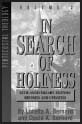
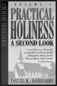
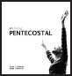

The following sources from which this book was taken offer further information.

In Search of Holiness
By David K. Bernard and Loretta Bernard
This classic volume presents a synthesis of the fundamental principles of holiness as taught in the Scriptures.

Practical Holiness
By David K. Bernard
With thorough research and historical perspectives, this volume investigates the theology of holiness and presents practical applications for topics such as dress, hair, abortion, divorce, and stewardship of the body.

On Being Pentecostal
By David K. Bernard and Robin Johnston
For some people “Pentecostal” is a new word. This book surveys the core doctrines of Oneness Pentecostalism and presents what it means to be Pentecostal.
Visit: www.pentecostalpublishing.com